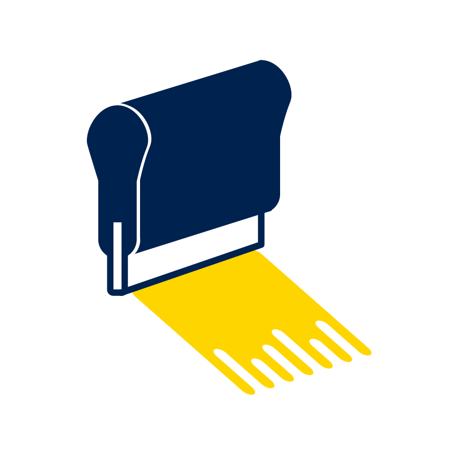
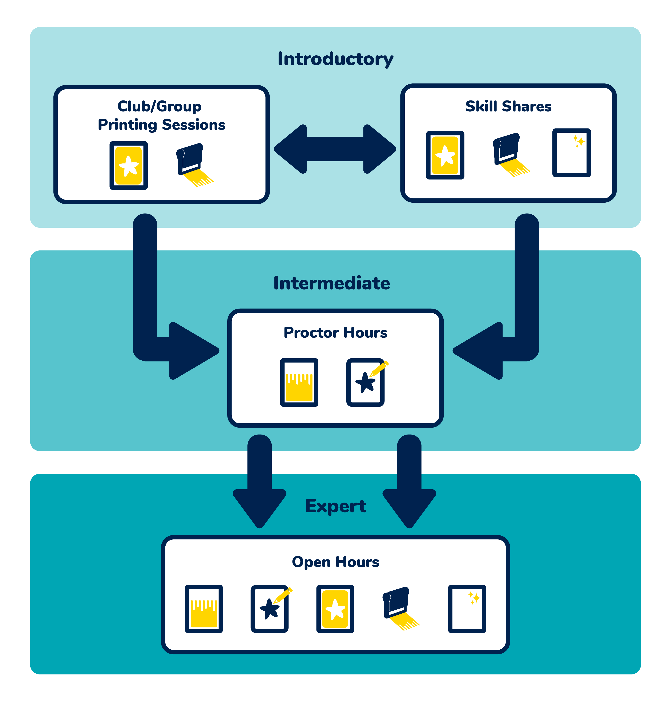

The Print Lab Overview - FA '21
The Print Lab at the Hive is a space where students can learn the screen printing process from start to finish. It is also a space where students can come work on individual projects once they have been trained in the basic steps of screen printing.
Basic steps of screen printing
1. Coating the screen

2. Creating the design

3. Burning the screen

4. Printing the design
5. Reclaiming the screen
The main way students engaged in screen printing during the Fall '21 semester was through student proctor led Skill Shares that occured as biweekly 2 hour workshops for up to 8 attendees that had registered for the event. Attendees would spend time at the start of the sessions drawing individual designs and then be instructed through burning screens and the actual action of printing. These Skill Shares were meant to be an introduction to screen printing and to gain sustained interest from users in printing at the Hive. Another way users engaged in screen printing was through informal Proctor Hours where students (usually those who had personal connections to the proctors) could show up when proctors were on shift to get one-on-one instruction. These sessions did not have as much structure as the Skill Shares, so the skills taught varied greatly from session to session. The breakdown of the differences between these offerings are detailed below.
Skill breakdown and target audience for offerings in the Print Lab during FA '21
Skill Shares
Target Audience:
Estimated Number of Users (1 semester): 40+
-
Beginners who want to learn the basics of screen printing
-
College students who need a break from rigorous schooling
Skills Focus:
Informal Proctor Hours
Target Audience:
Estimated Number of Users (1 semester): 15+
- Beginners who want to learn the basics of screen printing
- Users with specific printing projects
- Users with specific skill learning goals not covered in the Skill Share
Skills Focus:
Since this semester was the first semester back from the quarantine, the main goal for the activities we offered was to attract students back to the space. We were successful in gaining lots of interest in screen printing, but this led to uneven service to users since we did not have the infrastructure set up to support their different interests.
Observations and Areas for Improvement
During the Fall '21 semester, the proctors and I gathered observations about what needed work to make the Print Lab a more sustainable and accessible creative space for all students. From this, we gathered the following observations:
There is a high demand for screen printing that does not accommodate the different needs of users
The schedule of a biweekly Skill Share that can only accommodate 8 people at a time does not serve all the users of the Hive who have expressed interest in learning how to screen print. Additionally, different groups of users want to learn how to screen print for different reasons. Some use the workshop as a way to participate in a social activity while others view screen printing as a tool to create. Neither of methods of teaching in FA '21 were condusive to larger group and social settings for clubs or classes who wanted to do a shared printing project
Student proctors are overwhelmed at the Skill Share
Each attendee to a Skill Share works on an independent design that they want printed. This means that the 2 student staff proctors who work a Skill Share must divide their attention to multiple users who have specific questions about the process. Skill shares are meant to be 2 hour long workshops, but often the proctors would be teaching for 3+ hours to make sure every attendee finished a print.
Skill shares only cover a limited set of skills preventing long term engagement and repeated use
During a Skill Share processes like coating screens to prepare and reclaiming screens as clean up cannot be covered because there is not enough time to make sure every attendee can go through these processes. Students who want to return and complete another project on their own time are unable to do so because they were unable to learn all the steps of printing.
Solutions and Print Lab Overview - FA '22
The observations we made during FA '21 led us to implement the Print Lab ID, which keeps track of what skills users have learned at whatever offering they attend.
The Print Lab ID acts as a physical guide for users to keep track of how much of the screen printing process they have learned and aims to increase repeated use of the space. Once a user can show that they can complete all the steps detailed on the Print Lab ID, they are approved to use the Print Lab by themselves freeing up time for the student proctors and myself to help newer users of the space. These IDs are given to anyone who wants to be a repeated user of the space and can be started at Skill Shares or Proctor Hours.
To learn the skills outlined on the Print Lab ID and work on personal projects, students can attend 4 different kinds of offerings. We introduced 2 new offerings, Club/Group Print Sessions and Open Hours, and we edited what skills would be covered at the Skill Shares and Proctor Hours to reduce the stress on student proctors during their workshops and events. The overview breakdown of the differences in target user, skills, and estimated number of users per category during a semester for each of the offerings are detailed below.
Skill breakdown and target audience for offerings in the Print Lab during FA '22
Skill Shares
Target Audience:
-
Beginners who want to learn the basics of screen printing
-
College students who need a break from rigorous schooling
Estimated Number of Users (1 semester): 50+
Skills Focus:
Club/Group Printing Session
Target Audience:
- Beginners who want to learn the basics of screen printing
- Clubs or groups who want a social or bonding activity that involves making
- Clubs or groups who want to create large amounts of matching apparel
Estimated Number of Users (1 semester): 100+
Skills Focus:
Proctor Hours
Target Audience:
- Beginners who want to learn the basics of screen printing
- Users with specific printing projects
- Users who want to practice more skills on their Print Lab ID
Estimated Number of Users (1 semester): 30+
Skills Focus:
Open Hours
Target Audience:
- Users who have completed their Print Lab ID
- Users with specific printing projects
Estimated Number of Users (1 semester): 10+
Skills Focus:
Here are more detailed descriptions of what each Print Lab offering is as of the FA '22 semester at the Hive and how they address specific observations made during the FA '21 semester.
Club/Group Printing Sessions
These sessions aim to serve a different group of users who want to participate in screen printing as a group bonding activity and/or to create matching merchandise for members of the club. There are a limited amount of people who can participate in Skill Shares since there is more emphasis on learning more of skills in the screen printing process. The Club/Group Printing Sessions only focus on the printing part of the process so that a larger group of people can get the experience of printing on their own items. A representative from the Hive (student proctor or myself) will work with a representative from the club or group to decide on 1-4 designs that all members of the club will use. The Hive representative will then prepare the designs beforehand, but can give screen burning demonstrations to the club members. This type of event is beneficial to the Hive since it allows a larger group of people to participate in screen printing and serves as a great place to advertise the other offerings to encourage repeated users of the Print Lab.
Skill Shares
Skill Shares remain as biweekly 2 hour workshops to teach users the basics of screen printing, but the skills taught at the Skill Shares have shifted slightly. Rather than have all 8 attendees create their own designs, attendees now pair up and choose from several designs made by the student proctors and myself to reduce the percentage of time the workshop is spent on drawing. This leaves more time for the student proctors to instruct individuals on how to burn a screen, print their design, and clean up after themselves by reclaiming a screen. The new structure of the Skill Shares reduces the time pressure on the student proctors to rush through 8 individual projects in a 2 hour workshop (which usually ran for 3-4 hours instead) and also encourages the attendees who are paired together to help each other if both student proctors are busy at the same time. Attendees can get parts of their Print Lab IDs checked off during these workshops.
Proctor Hours
Proctor Hours have been given more structure by scheduling specific hours that require sign up via Google Appointments. This ensures that the student proctors are not suddenly helping more people than they can handle at once because people assume they can drop in. It also opens up Proctor Hours to more students than just the ones who know the student proctors. During these Skill Shares, proctors are focused on helping students learn skills such as coating screens and preparing their designs for printing that are not covered in the Skill Share. Proctors also have greater capacity to help newer users of the Print Lab complete personal projects and designs during Proctor Hours. Attendees can complete their Print Lab IDs during these sessions.
Open Hours
Open Hours give more time to repeated users of the Hive to complete their own projects. Users who have completed their Print Lab IDs can sign up for times outside of Skill Shares and Proctor Hours when student proctors are not present to work on their individual projects. These sessions allow for longer term engagement from users of the Print Lab and remove some of the stress on student proctors to accommodate more people during Skill Shares or Proctor Hours. From these sessions, we have seen creative work done by people who learned how to screen print through the Hive.
Each of these offerings provide a different type of engagment and teach different skills to the users so they can get the most out of their Print Lab experience. Additionally, each offering flows into another so that users can track how to improve their skills in screen printing.
